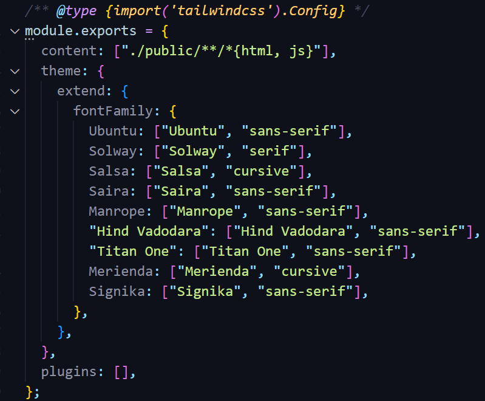
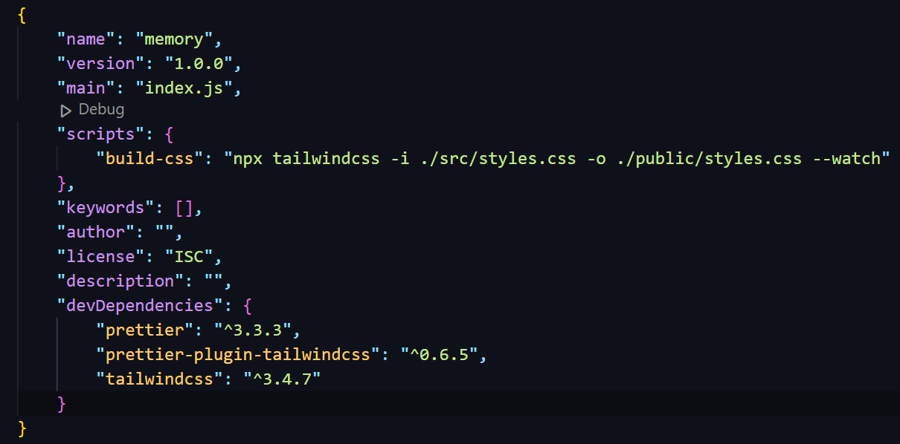

Git
Git Commands
Delete file/folder from remote repository
git rm -r
'folder name/file name'
git commit -m
"Your comments"
git push origin main/master
Tailwind CSS
Tailwind CSS Initilization
-
- In VS Code, in the project folder (folder that contains all things for your project) open the Terminal by right-click on the folder =>
Open in Integrated Terminal
. Type
npm init -yto create package.json file for using NodeJS packages. -
- npm install -D tailwindcss=> to create node-modules folder -
- npx tailwindcss initto create tailwind.config.js file - - Change "content" in tailwind.config.js file to: 
- - Change "scripts" in package.json to: 
- npm run build-css
Need to execute the code:
npm run build-css
every time relaunch VS Code.
Tailwind CSS Configuration
npx tailwindcss init --full
→ to create Tailwind default configuration file
→ this will create file: tailwindcss.config.js . This is the same as the file when we use npx tailwindcss init to create tailwind file used for the project.
→ rename the default config file to make sure that it's not used for our project.
Prettier
Prettier Tailwind CSS Initilization
- Install "prettier-plugin-tailwindcss" as a dev-dependency:
npm install -D prettier prettier-plugin-tailwindcss
- Create ".prettierrc.json" file in the folder that contains the .html file (public folder in this example)
- Add the plugin to .prettierrc.json

Issues
- Old closing tag for empty element " />" still occurs.
- When using HTML Formatting Elements (<b>, <em>, <strong>,...) in a paragraph (inside <p> element), Prettier automatically formats it to enter a new line.